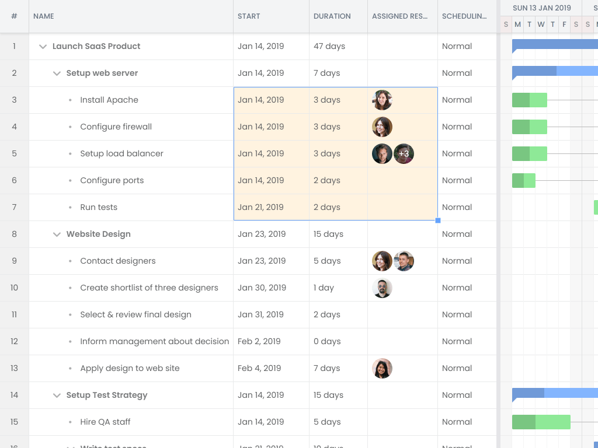
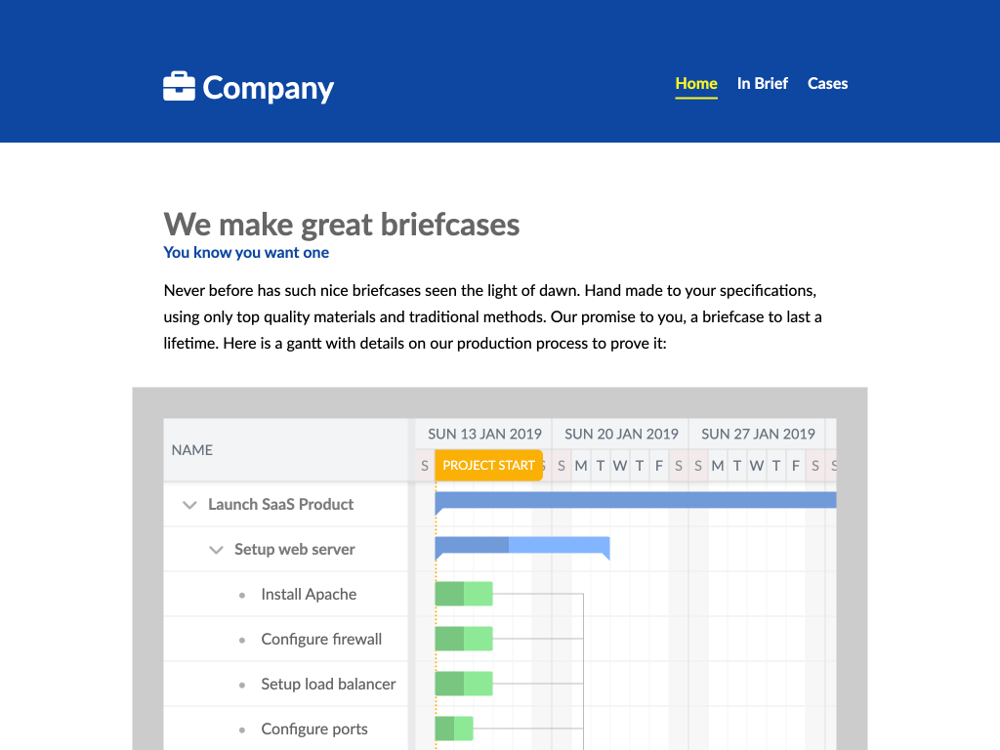
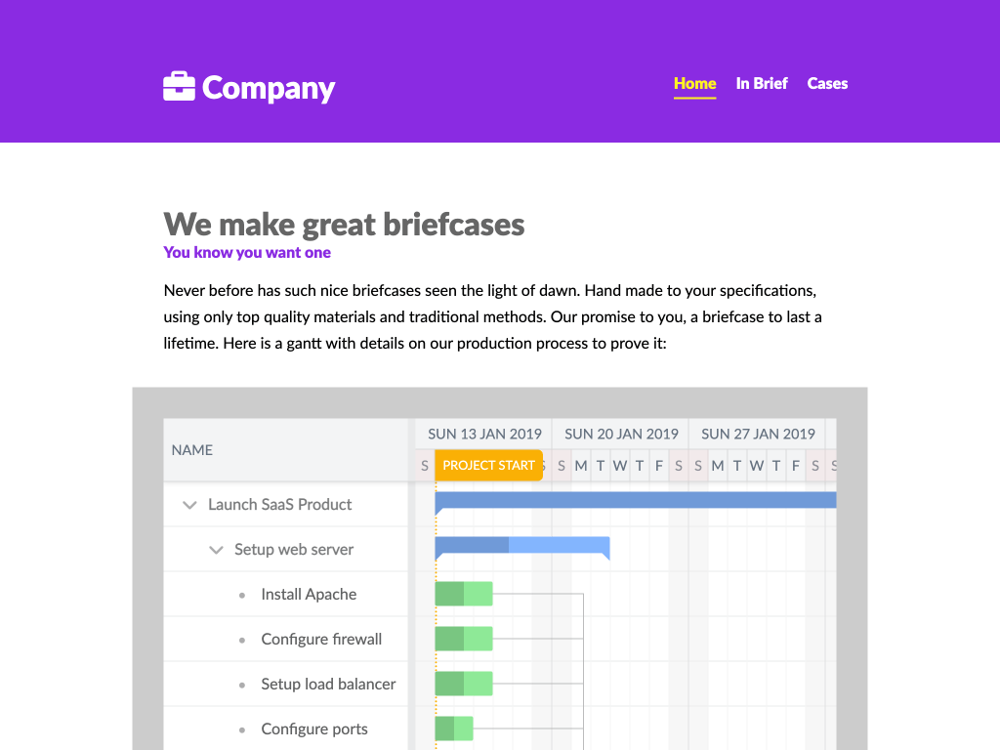

Bryntum Gantt
Power demos
Advanced
Big data set
Gantt + Scheduler Pro
Gantt + TaskBoard
Features
Basic setup
Aggregation column
Advanced filtering
Baselines
Highlighting task non-working time

Cell selection
Collapsible columns
Critical paths
Early render vs legacy render
Facet filtering
Filtering
Fixed Columns
Grouping
Grid Sections
Highlight time spans
Inactive tasks
Indicators
Infinite timeline scrolling
Labels
Parent area
Pin successors during drag drop
Progress line
Responsive
Rollups
Scheduling conflict resolution popup
Scroll buttons
Split tasks
Static mode
Storing and restoring state
Stretch tasks to fill ticks
Summary feature
Time Ranges
Time zone support
Undo/Redo
Versions
WBS
Export & import
Export to Excel
Export to MS Project
Import MS Project & Primavera P6 files
Export to PDF / PNG
Print
Customization
Customizing task bar contents
Custom time axis header
Customizing the resource assignment picker
Customized task bar
Customizing layers
Customized UI to support single resource assignment
Customizing the task editor
Customizing the task menu
Customizing the task styling
Customized tooltips
Localization
Theme browser
Custom Theme
Drag drop
Drag resources from a grid
Drag resources from utilization panel
Drag unplanned tasks from a grid
Additional widgets
Resource histogram widget
Resource utilization widget
Timeline widget
Integration
Replace the task menu
Include in CSP page

Include using EcmaScript module
https://www.sencha.com" data-group="Integration" role="presentation">
ExtJS Modern App integration
ExtJS 6.5.3
Backend in PHP
Integrate with Salesforce Lightning

Include using a script tag
Use as web component
ASP.NET
ASP.NET Core
Custom build using WebPack
WebPack 4
Integrate with Ionic
Ionic 5, Angular 10